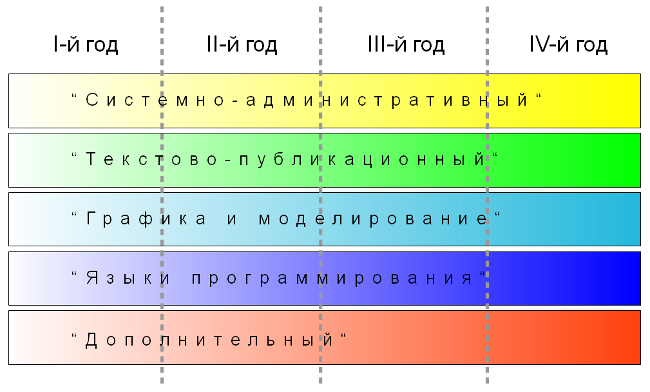

Пояснительная записка образовательной программы дополнительного образования детей "Лаборатория юного линуксоида"
Образовательная программа "Лаборатория юного линуксоида" разработана для объединений, реализующих программы дополнительного образования детей, связанные с информационными технологиями.
Программа реализуется с 2008 года, вторая редакция программы была написана в 2011 году.
Возраст обучающихся: 11-16 лет (включительно). Возраст учащихся, приступающих к освоению данной программы по первому году обучения, — 11-13 лет.
Срок реализации программы: 4 года.
Возможные формы обучения: групповая, индивидуальная, дистанционная.
Количество часов в год: 144 — первый год обучения, 216 — второй и последующие.
Продолжительность одного занятия: 2 академических часа. Количество занятий в неделю: 2 — для первого года обучения, 3 — для второго и последующих.
Особенности программы
В связи с тем, что объем информации, связанной с информационными технологиями, огромен, существует проблема выбора предмета изучения и последовательности изучения различных направлений ИТ. В данной программе эта проблема решается за счет того, что учащиеся на каждом году обучения получают законченный объем знаний определенного уровня по различным направлениям (модулям) информационных технологий. В следующем году происходит углубление и расширение знаний по каждому из модулей. Каждый год обучения состоит из пяти модулей, которые можно условно назвать: "Системно-административный", "Текстово-публикационный", "Графика и моделирование", "Программирование" и "Дополнительный". Так, например, в "системно-административном" модуле учащиеся на первом году обучения осваивают принципы работы в различных графических средах, на втором году — учатся работать в режиме командной строки, и к четвертому — знакомятся с основными понятиями и принципами работы операционной системы.

- Профессиональная ориентация
Несмотря на то, что программа состоит из различных модулей, программированию уделяется большее внимание (чуть менее половины от количества часов всей программы). Поэтому программа способствует ранней профессиональной ориентации обучающихся.
- Использование свободного программного обеспечения (СПО)
Использование СПО позволяет гарантировать равные возможности участникам образовательного процесса, несет в себе воспитательное значение как демонстрация положительного результата открытости и взаимодействия профессионального сообщества.
- Возможность самостоятельного изучения курса программы, использование элементов дистанционного обучения
С целью методической поддержки программы был создан сайт (http://younglinux.info), на котором в открытом доступе находятся дидактические материалы к занятиям. Обучающиеся могут воспользоваться этим материалом для самообучения, задать вопрос по изучаемой теме, получить консультацию.
Цель и задачи программы
Цель программы — создание условий для профессионального самоопределения обучающихся, формирование у них информационной картины мира посредством разностороннего изучения компьютерных технологий.
Обучающие задачи программы:
- формирование представления о роли информационных технологий в современном обществе;
- знакомство с возможностями компьютерных технологий в отношении обработки и представления графической и текстовой информации;
- формирование навыков работы с современным программным обеспечением;
- изучение различных парадигм и языков программирования, инструментов для создания графического интерфейса пользователя;
- формирование представления о мире как системе разнообразных взаимодействующих объектов;
Развивающие задачи программы:
- развитие абстрактного и логического мышления;
- развитие творческого подхода к решению различных задач.
Воспитательные задачи программы:
- воспитание самостоятельности;
- воспитание культуры взаимодействия с другими людьми в условиях открытого информационного общества.
Ожидаемые результаты
В конце первого года обучения учащийся должен иметь следующие
знания:
- представление об операционной системе как управляющей ресурсами компьютера программе;
- виды графики и цветовые модели;
- представление о программировании;
- основные инструкции языка программирования Logo;
- представление о компьютерной анимации;
умения:
- работа в текстовом процессоре и графических редакторах, создание растровых и векторных изображений;
- подготовка компьютерной презентации;
- составление программ на языке программирования Logo;
- создание анимированных изображений;
навыки:
- работа в операционной системе на уровне пользователя;
- набор и редактирование текста.
В конце второго года обучения учащийся должен иметь следующие
знания:
- файловая структура операционной системы на базе ядра Linux;
- основные утилиты ОС GNU/Linux;
- представление о языках HTML и CSS;
- синтаксис языков Python и Pascal, основы структурного программирования, типы данных;
- алгоритмы решения различных задач;
- понимание блок-схем;
умения:
- работа в текстовом режиме операционной системы GNU/Linux;
- описание алгоритмов и создание небольших программ на языках Python и Pascal;
- создание сайта;
навыки:
- обработка растровых изображений.
В конце третьего года обучения учащийся должен иметь следующие
знания:
- представление о режимных редакторах;
- особенности создания публикаций;
- представление о трехмерном моделировании и 3D-графике;
- принципы объектно-ориентированного программирования;
- представление о разнообразии инструментов для создания графического интерфейса пользователя;
- особенности синтаксиса графической библиотеки Tkinter, принципы работы в среде Lazarus;
умения:
- работа в многофункциональных текстовых редакторах Vim и Emacs;
- использование компьютерных технологий при создании публикаций;
- создание трехмерных моделей в программе Blender;
- владение основами Blender Game Engine;
- понимание кода объектно-ориентированных программ на языках программирования Python и Pascal;
- использование библиотеки Tkinter и работа в среде Lazarus.
В конце четвертого года обучения учащийся должен иметь следующие
знания:
- представление о принципах работы операционных систем;
- назначение и особенности использования издательской системы LaTeX;
- представление об инструментах проектирования;
- синтаксис и особенности языка программирования C;
- особенности объектно-ориентированного программирования на C++;
- особенности и сферы применения библиотеки QT;
- назначение электронных таблиц;
- представление о реляционных базах данных и системах управления ими;
умения:
- создание публикаций, в которых используются специальные (научные) символы;
- создание диаграмм различного назначения;
- программирование на языке C;
- понимание кода программ, написанных на языке C++;
- использование библиотеки QT для создания оконных приложений;
- работа с электронными таблицами;
- создание базы данных с помощью СУБД.